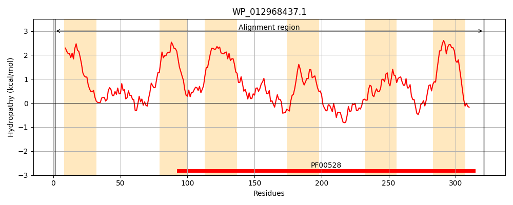
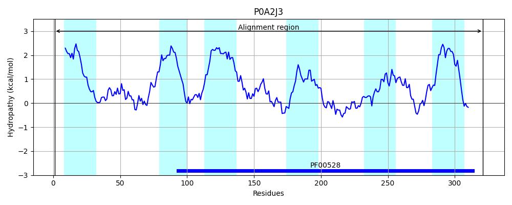
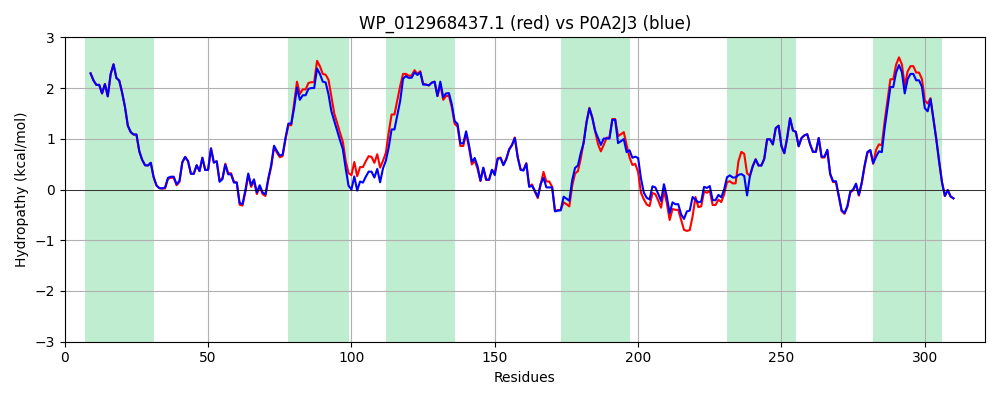

Hit Accession: P0A2J3
Hit TCID: 3.A.1.5.5
Hit Description: gnl|BL_ORD_ID|8553 gnl|TC-DB|P0A2J3|3.A.1.5.5 Peptide transport system permease protein sapB - Salmonella typhimurium.
Mach Len: 321
e:0.000000
Query TMS Count : 6
Hit TMS Count: 6
TMS-Overlap Score: 7.350000
Predicted Substrates:CHEBI:134400;cationic peptidyl group
BLAST Alignment:
Score: 1520 , Bit scores: 590 bits, E-value: 0.0e+00, Alignment length: 321, Percentage identity: 90
Query: 1 MIIFTLRRLLLLLVTLFFLTFIGFSLSYFTPHAPLQGASLWNAWLFWFQGVLHWDFGVSSINGQLISEQLREVFPATMELCILAFGFALLIGIPVGMIAGVMRNKWPDTLISAVALVGFSIPVFWLALLLTLFFSLTLGWFPVSGRFDLLYEVKTVTGFALIDAWISDSPWRHEMIVSAARHMMLPVLTLAVAPTTEVIRLMRISTSEVYDTNYVKAAATRGVSRRKILLRHVLHNALPPVIPRLGLQFSTMLTLAMITEMVFSWPGLGRWLINAIRQQDYAAISAGVMVIGALVIIVNVISDILGAMANPLKHKEWYALR 321
MIIFTLRRLLLLLVTLFFLTFIGFSLSYFTPHAPLQGASLWNAW+FWF G+LHWDFGVSSINGQLISEQL+EVFPATMELCILAFGFAL++GIPVGM+AGV R+KWPD ISA+AL+GFSIPVFWLALLLTLFFSLTLGW PVSGRFDLLYEVK VTGFA+IDAWISDSPWR EM++SA RHM+LPVLTL+VAPTTEVIRLMRIST EVYD NYVKAAATRG+SR IL RHVLHNALPPVIPRLGLQFSTMLTLAMITEMVFSWPGLGRWLI+AIRQQDYAAISAGVMVIG+LVI+VNVISDILGAMANPLKHKEWYALR
Sbjct: 1 MIIFTLRRLLLLLVTLFFLTFIGFSLSYFTPHAPLQGASLWNAWVFWFNGLLHWDFGVSSINGQLISEQLKEVFPATMELCILAFGFALMVGIPVGMLAGVTRSKWPDRFISALALLGFSIPVFWLALLLTLFFSLTLGWLPVSGRFDLLYEVKPVTGFAIIDAWISDSPWRDEMVMSAIRHMVLPVLTLSVAPTTEVIRLMRISTIEVYDQNYVKAAATRGLSRFTILRRHVLHNALPPVIPRLGLQFSTMLTLAMITEMVFSWPGLGRWLIHAIRQQDYAAISAGVMVIGSLVIVVNVISDILGAMANPLKHKEWYALR 321 | Protein Hydropathy Plots: |
|---|
|  |  |
Pairwise Alignment-Hydropathy Plot:
|
|---|
|  |